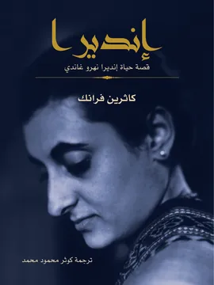

إنديرا: قصة حياة إنديرا نهرو غاندي

قراءة عربية أصلية محددة النطاق في الصفحات 9 إلى 14 من ملف PDF المرتبط، وليست تلخيصا كاملا للكتاب. نناقش ما تدعمه هذه المقاطع فقط.
إنديرا: الخروج من كشمير
تفتتح فرانك الفصل الأول «الخروج من كشمير» بحكاية خطابها إلى فاروق عبد الله رئيس وزراء كشمير الذي لم يصله إلا بعد ستة أسابيع، وحمل رده أخبارًا سعيدة عن الحديث معها في شأن إنديرا. وتصف كشمير اليوم: كانت ساحة مرح أثناء الحكم البريطاني ثم منتجعًا سياحيًّا، لكنها تحولت إلى ساحة حرب تتنازع عليها الهند وباكستان؛ فمعظم فنادق سريناجار مهجور وما بقي مأوى لقوات الأمن، وبحرية دال يغطي سطحها لون أخضر ولا أسماك تعيش فيها. وتذكر أن إنديرا عينت ابن عمها نهرو حاكمًا لكشمير عام ١٩٨٢، ولم تنبس في لقائها به عن الوضع المتفجر، بل عن الحاجة الملحة لتنظيف بحرية دال. فكشمير جرح الهند الذي أنتجه الانقسام عام ١٩٤٧، حين انضمت الولاية الوحيدة ذات الغالبية المسلمة إلى الهند العلمانية لا باكستان بقرار المهراجا الهندوسي، ومنذ ذلك الحين وقعت ثلاث حروب بسببها. وقصة إنديرا تبدأ وتنتهي في كشمير: كتب والدها جواهرلال نهرو في سيرته «لقد كنا كشميريين»، وآمنت بالمقولة وحولتها إلى المضارع حين قالت «أنا كشميرية»، وظلت كشمير الملاذ الذي يهفو إليه قلبها طوال حياتها.
زاوية وحدود القراءة
قراءة موجزة من ص ١٩ إلى ص ٢٤ من أصل ٦٥٨ صفحة، تعرض الفصل الأول، لا الكتاب كاملًا.
الطبعة والقراءة
هذه الترجمة العربية صادرة ومتاحة مجانًا بموجب اتفاق قانوني بين مؤسسة هنداوي والكاتبة كاثرين فرانك، عناية بيترز فريزر آند دنلوب ليمتد. حقوق الترجمة محفوظة لمؤسسة هنداوي.
تنزيل PDF المجاني ↓ القراءة والمصدر الرسمي ↗